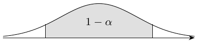

Lecture 3: Efficient Treatment Effect Estimation via Augmented IPW
Oracle IPW can have larger asymptotic variance than aggregation for discrete \(X\), as the preceding comparison shows.
Two characterizations of the ATE
Using \(e(x)=P(W_i=1\mid X_i=x)\), \(\tau=E[\widehat\tau^*_{\rm IPW}]\), where the oracle estimator is as above.
Using \(\mu_{(w)}(x)=E[Y_i(w)\mid X_i=x]\), \[\tau(x)=\mu_{(1)}(x)-\mu_{(0)}(x),\quad \tau=E[\mu_{(1)}(X_i)-\mu_{(0)}(X_i)],\] which motivates \[\widehat\tau_{\rm REG}=\frac1n\sum_i[\widehat\mu_{(1)}(X_i)-\widehat\mu_{(0)}(X_i)].\]
The augmented IPW estimator
\[\begin{aligned} \widehat\tau_{\rm AIPW}=\frac1n\sum_i\bigg[&\widehat\mu_{(1)}(X_i)-\widehat\mu_{(0)}(X_i) +W_i\frac{Y_i-\widehat\mu_{(1)}(X_i)}{\widehat e(X_i)}\\ &-(1-W_i)\frac{Y_i-\widehat\mu_{(0)}(X_i)}{1-\widehat e(X_i)}\bigg]. \end{aligned}\]
Personal intuition.
First use \(\mu(x)\) to estimate the outcome, and then use IPW on the regression residuals. IPW makes the covariate composition of the data “fair.”
Double robustness
AIPW is consistent if either the outcome regressions \(\widehat\mu_{(w)}(x)\) are consistent or \(\widehat e(x)\) is consistent. Here overlap and integrability are assumed, and the other nuisance estimate must remain well behaved. For fitted functions, the expectation argument below is conditional on an independent training fold as well as the displayed covariates. Cross-fitting supplies this separation.
When \(\widehat\mu_{(w)}(x)\approx\mu_{(w)}(x)\), the regression average is consistent and the weighted residual terms have mean approximately zero because \[E[Y_i-\widehat\mu_{(W_i)}(X_i)\mid X_i,W_i]\approx0.\] The propensity term is held fixed by this conditioning. When instead \(\widehat e(x)\approx e(x)\), rearrange: \[\begin{aligned} \widehat\tau_{\rm AIPW}={}&\frac1n\sum_i\left[\frac{W_iY_i}{\widehat e(X_i)} -\frac{(1-W_i)Y_i}{1-\widehat e(X_i)}\right]\\ &+\frac1n\sum_i\left[\widehat\mu_{(1)}(X_i)\left(1-\frac{W_i}{\widehat e(X_i)}\right) -\widehat\mu_{(0)}(X_i)\left(1-\frac{1-W_i}{1-\widehat e(X_i)}\right)\right]. \end{aligned}\] The first part is IPW. The second has mean approximately zero since \(E[1-W_i/\widehat e(X_i)\mid X_i]\approx0\); conditioning holds the fitted outcome regression fixed.
Semiparametric efficiency
AIPW attains the semiparametric efficiency bound among regular estimators in this nonparametric model. When the nuisance functions are estimated sufficiently accurately, \[\sqrt n(\widehat\tau_{\rm AIPW}-\widehat\tau^*_{\rm AIPW})\longrightarrow_p0,\] where the starred estimator is oracle AIPW. This oracle estimator is just an IID average, so the central limit theorem also applies to the estimated version:
\(\sqrt n(\widehat\tau_{\rm AIPW}-\widehat\tau^*_{\rm AIPW})\to_p0\) \(\textcolor{blue}{\longrightarrow}\) The oracle IID central limit theorem transfers to estimated AIPW.
\[\sqrt n(\widehat\tau_{\rm AIPW}-\tau)\Rightarrow N(0,V^*),\] \[V^*=\operatorname{Var}[\tau(X_i)] +E\left[\frac{b_0^2(X_i)}{1-e(X_i)}\right] +E\left[\frac{b_1^2(X_i)}{e(X_i)}\right].\] This is a Cramer–Rao-type constraint: the best attainable variance among regular estimators.
AIPW and cross-fitting
Randomly split the data into two halves, \(I_1\) and \(I_2\). The annotation says to split the data and choose the halves at random. Set \[\widehat\tau_{\rm AIPW}=\frac{|I_1|}{n}\widehat\tau^{I_1} +\frac{|I_2|}{n}\widehat\tau^{I_2},\] \[\begin{aligned} \widehat\tau^{I_1}=\frac1{|I_1|}\sum_{i\in I_1}\bigg[&\widehat\mu_{(1)}^{I_2}(X_i)-\widehat\mu_{(0)}^{I_2}(X_i) +W_i\frac{Y_i-\widehat\mu_{(1)}^{I_2}(X_i)}{\widehat e^{I_2}(X_i)}\\ &-(1-W_i)\frac{Y_i-\widehat\mu_{(0)}^{I_2}(X_i)}{1-\widehat e^{I_2}(X_i)}\bigg]. \end{aligned}\] Asymptotically, we can ignore the specific properties of the chosen machine-learning adjustment method and instead rely on:
Overlap: \(\eta<e(x)<1-\eta\) for all \(x\in\mathcal X\), with \(\eta>0\).
Consistency of the nuisance estimators: \[\sup_x|\widehat\mu_{(w)}^{I_2}(x)-\mu_{(w)}(x)|\longrightarrow_p0, \quad \sup_x|\widehat e^{I_2}(x)-e(x)|\longrightarrow_p0.\] The chosen learning method must satisfy these consistency assumptions; consistency is not automatic for every method.
Risk decay for the outcome and propensity models: \[E[(\widehat\mu_{(w)}^{I_2}(X_i)-\mu_{(w)}(X_i))^2]\, E[(\widehat e^{I_2}(X_i)-e(X_i))^2]=o(1/n).\] If both are \(\sqrt n\)-consistent, the product is of order \(1/n^2\). A simple sufficient approach is for both regression adjustments to converge at \(o(n^{-1/4})\) in RMSE.
Proof.
Write the oracle estimator as \(\widehat\tau^*=|I_1|\widehat\tau^{I_1,*}/n+|I_2|\widehat\tau^{I_2,*}/n\). To establish \(\sqrt n(\widehat\tau_{\rm AIPW}-\widehat\tau^*)\to_p0\), it suffices to show the corresponding result for the treated mean; the other components are analogous. Define \[\widehat\tau^{I_1}=\widehat\mu^{I_1}_{(1)}-\widehat\mu^{I_1}_{(0)},\qquad \widehat\mu^{I_1}_{(1)}=\frac1{|I_1|}\sum_{i\in I_1} \left[\widehat\mu^{I_2}_{(1)}(X_i)+W_i\frac{Y_i-\widehat\mu^{I_2}_{(1)}(X_i)}{\widehat e^{I_2}(X_i)}\right].\] Subtracting its oracle version gives \[\begin{aligned} \widehat\mu^{I_1}_{(1)}-\widehat\mu^{I_1,*}_{(1)} ={}&\frac1{|I_1|}\sum_{i\in I_1} (\widehat\mu^{I_2}_{(1)}(X_i)-\mu_{(1)}(X_i))\left(1-\frac{W_i}{e(X_i)}\right)\\ &+\frac1{|I_1|}\sum_{i\in I_1}W_i(Y_i-\mu_{(1)}(X_i)) \left(\frac1{\widehat e^{I_2}(X_i)}-\frac1{e(X_i)}\right)\\ &-\frac1{|I_1|}\sum_{i\in I_1}W_i(\widehat\mu^{I_2}_{(1)}(X_i)-\mu_{(1)}(X_i)) \left(\frac1{\widehat e^{I_2}(X_i)}-\frac1{e(X_i)}\right). \end{aligned}\] The first contribution has conditional variance \(o_p(1)/n\); the last is \(o_p(1/\sqrt n)\). If \(T_1\) is the first average and \(\mathcal D_2\) its training data,\[E[T_1\mid\mathcal D_2]=0,\qquad E[T_1^2\mid\mathcal D_2]\le\frac{E[(\widehat\mu_1(X)-\mu_1(X))^2\mid\mathcal D_2]}{\eta|I_1|}=o_p(n^{-1}).\] Thus \(T_1=o_p(n^{-1/2})\). The second average is similar; Cauchy–Schwarz and the product-risk condition control the last.
For \(K\) folds, use nuisance estimates trained without the fold \(k(i)\) containing observation \(i\): \[\begin{aligned} \widehat\tau_{\rm AIPW}=\frac1n\sum_i\bigg[&\widehat\mu_{(1)}^{(-k(i))}(X_i)-\widehat\mu_{(0)}^{(-k(i))}(X_i) +W_i\frac{Y_i-\widehat\mu_{(1)}^{(-k(i))}(X_i)}{\widehat e^{(-k(i))}(X_i)}\\ &-(1-W_i)\frac{Y_i-\widehat\mu_{(0)}^{(-k(i))}(X_i)}{1-\widehat e^{(-k(i))}(X_i)}\bigg]. \end{aligned}\]
Confidence intervals
Supplement: terminology.
The ordinary likelihood score is \[S(\theta)=\frac{d\log L(\theta)}{d\theta},\] where \(L(\theta)\) is the likelihood. The empirical variance of \(n\) sample scores is \[\frac1{n-1}\sum_i(S_\theta(O_i)-\overline S_\theta)^2.\] With nuisance parameters, the efficient score removes the nuisance-score component. For the ATE, the centered AIPW summand \(\psi_i^*-\tau\) below is the efficient influence function, and its variance is the efficiency bound; this differs from a raw likelihood score, whose variance is Fisher information.
Variance estimation.
Define the oracle summand \[\psi_i^*=\mu_{(1)}(X_i)-\mu_{(0)}(X_i) +\frac{W_i(Y_i-\mu_{(1)}(X_i))}{e(X_i)} -\frac{(1-W_i)(Y_i-\mu_{(0)}(X_i))}{1-e(X_i)}.\] Its empirical variance converges to the efficient variance: \[\frac1{n-1}\sum_i(\psi_i^*-\widehat\tau^*)^2\longrightarrow_p V^*.\] Here \(\widehat\tau^*\) is oracle AIPW.
The non-cross-fitted oracle AIPW estimate \(\textcolor{blue}{\longrightarrow}\) \(\widehat\tau^*\) in \(\sum_i(\psi_i^*-\widehat\tau^*)^2/(n-1)\).
Replacing each nuisance function by the estimate trained outside \(k(i)\) gives the cross-fitted summand \(\widehat\psi_i\) and \[\widehat V_{\rm AIPW}=\frac1{n-1}\sum_i(\widehat\psi_i-\widehat\tau_{\rm AIPW})^2\longrightarrow_p V^*.\] The confidence interval drawn under a central normal probability region is

The interval has asymptotic coverage \(1-\alpha\):
\[\widehat\tau_{\rm AIPW}\ \pm\ \frac1{\sqrt n}\Phi^{-1}(1-\alpha/2)\sqrt{\widehat V_{\rm AIPW}}.\]